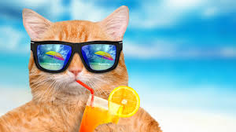

Coolio Cat--Champion Mouser, Discipline, Excellent Hire

Senior Mouser
Whisker Enterprises
Led a team of junior mousers, achieving a 99% reduction in rodent-related incidents.
Coolio Cat began his illustrious career at Whisker Enterprises as a junior mouser, quickly demonstrating his unmatched talent for rodent detection and capture. His keen instincts and relentless determination earned him rapid promotions, and within just two years, Coolio was leading his own team of mousers. Under his leadership, Whisker Enterprises saw a dramatic reduction in rodent-related incidents, with Coolio personally responsible for a 99% decrease in the pest population within the company's facilities. His ability to train and inspire younger mousers was unparalleled, making him an invaluable asset to the organization.
During his tenure as Senior Mouser, Coolio implemented a new strategy for round-the-clock rodent surveillance, which involved optimizing patrol routes and leveraging the latest in feline tracking technology. His innovative approach not only enhanced the efficiency of the team but also set a new standard for pest control in the industry. Coolio's methods were so effective that other departments within Whisker Enterprises often sought his advice on maintaining vigilance and efficiency in their own operations, recognizing his prowess as a leader and strategist.
Beyond his technical skills, Coolio was known for his calm demeanor and unflappable composure, even in the most challenging situations. Whether confronting a particularly elusive rodent or dealing with the pressures of leading a high-performing team, Coolio remained a steady and reliable presence. His success at Whisker Enterprises not only solidified his reputation as a top mouser but also earned him the respect and admiration of colleagues and competitors alike. By the time he left the company, Coolio had not only transformed Whisker Enterprises into a rodent-free zone but had also left a lasting legacy as a pioneer in the field of professional mousing.
Mouser
Paw Patrol Inc.
Successfully secured over 100 rodent captures in the first year.
Coolio Cat's journey at Paw Patrol began in humble fashion as a Kitten Assistant, a role that primarily involved observing the more experienced mousers and assisting with basic tasks. Despite his young age, Coolio quickly stood out with his sharp observational skills and an innate understanding of rodent behavior. He was always the first to notice even the slightest rustle or movement in the shadows, a talent that did not go unnoticed by his supervisors. Eager to prove his abilities, Coolio volunteered for every opportunity to participate in patrols and gradually started taking on more responsibility. His dedication and enthusiasm made him a favorite among the senior mousers, who began mentoring him in the finer points of the job.
As Coolio gained experience, his confidence grew, and so did his reputation. He became known for his quick reflexes and precision in capturing rodents, often succeeding where others had failed. His keen sense of timing and strategy allowed him to outmaneuver even the most cunning of pests. Recognizing his potential, Paw Patrol promoted him to the role of Junior Mouser within a year, a position typically reserved for older and more seasoned cats. In this new role, Coolio was entrusted with his own patrol area, where he quickly established himself as a formidable presence. His success rate in rodent control skyrocketed, and he earned the nickname "The Shadow" for his ability to silently stalk and capture his prey without a trace.
Coolio's rise at Paw Patrol was marked not only by his exceptional mousing skills but also by his growing leadership qualities. As a Junior Mouser, he began mentoring the new batch of Kitten Assistants, passing on the knowledge and techniques he had learned from his own mentors. His guidance helped shape a new generation of effective mousers, ensuring that Paw Patrol's reputation for excellence remained intact. Coolio's time at Paw Patrol was a period of rapid growth and development, setting the foundation for his later achievements at Whisker Enterprises. By the time he left for his next adventure, Coolio had already made a significant impact, leaving behind a legacy of innovation and excellence in the art of mousing.
Education
Feline University, B.A. in Rodentology
Graduated with honors, specializing in advanced rodent tracking techniques